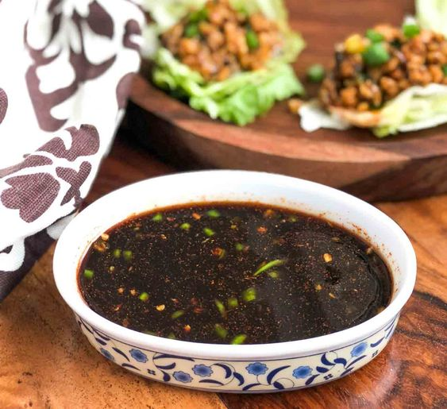
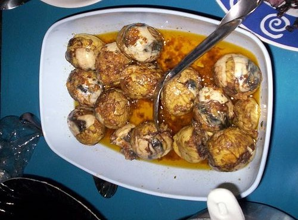
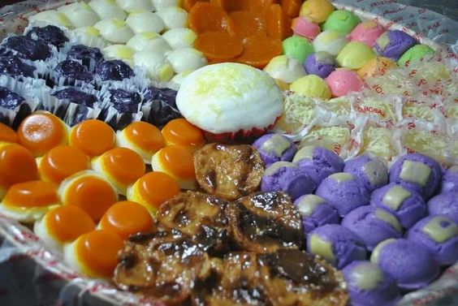
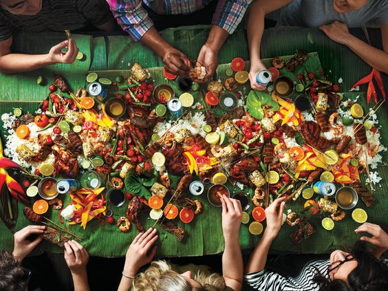

Awesome Filipino food!
Filipino food is a mix of Asian and Western influences transformed through local cooking techniques. Boasting proud indigenous flavors, rich traditions and eating practices unique to the country, Filipino cuisine is distinct, delicious and unlike anything you'll have tasted elsewhere. Here are things to know about Filipino cuisine.
It's never a meal without rice

Rice (particularly white rice), is considered the ultimate staple in Filipino food. It is present in every household and is more than likely part of every Filipino's meal - breakfast, lunch and dinner. Because of its plain, starchy flavor, it pairs well with a lot of salty and sour local dishes. Filipinos love rice so much that they would consume it whether it's traditionally cooked white rice (kanin), burnt rice (tutong), left-over rice (bahaw) or fried rice (sinangag). Restaurants and fast food chains catering to Filipinos based out of the country make sure that rice is always part of their menu. Sarap.
Dipping sauces are part of Filipino Cuisine
Although rice complements any Filipino dish, dipping sauces (served on the side) make your munch extra flavorful. The most common dipping sauces are soy sauce and calamansi (mixed together), fish sauce (patis), and spiced vinegar. Fried fish is especially more satisfying with one of these on the side. Sometimes, it's the sauce that completes the dish: For instance, Kare-kare (peanut-based beef stew) is always paired with bagoong (shrimp paste). Most importantly, there are no rules for creating dipping sauces and no one way to mix them. Most Filipinos would claim they can't eat without their favorite sawsawan (dipping sauce).
Duck embryos are a delicacy
You've probably come across the notorious balut Filipinos scratch their heads - it's delicious). This hard-boiled duck embryo, usually between two to three weeks old, makes for a tasty snack. Depending on its incubation period, the partially developed duck embryo may have features such as the beak, eye socket, or feathers. It's best served warm and enjoyed with a dash of rock salt or vinegar. While it may look vile to those with weaker constitutions, it's considered a healthy addition to your diet as it's loaded with protein and calcium.
Filipinos can't call it a day without having merienda
Since rice is the country’s staple meal (which is very easy to digest), Filipinos often find themselves hungry two-to-three hours after eating. People often have snacks (merienda) in the late morning, and another in the afternoon. Popular Filipino snacks can be pretty much anything (pastries, rice cakes called kakanin, fried bananas, pancit) as long as it does not constitute white rice (which gives you a lot of options!). The merienda tradition dates back to the Spanish era, when locals living in rural areas had breakfast as early as 4 a.m. to work in the fields and needed to grab a bite in-between meals.
You eat with your hands and never let the food wait
While it's uncommon to see people eating with their hands in the West, in the Philippines it's tradition. Kamayan, which is the act of eating food with your hands, is viewed by Filipinos as the best way to enjoy a meal - your digits are dextrous enough to scoop and mix all the flavors, after all. But if you don't feel like using your hands, you can also eat food Filipino-style - no knives and only a fork and spoon. Another customary tradition among Filipinos is to never let the food wait. Here, meal time is a sacred ritual and so everyone (especially families) must eat together and share everything that's laid out on the table.
We Filipinos are renowned for having good morals, being hospitable, working hard, and being able to meet any adversities in life with a smile. We are also known to have a strong passion for food, to the point that we view it as a pastime. The last statement, while covering the majority, obviously does not apply to everyone. Let's discuss our favorite Filipino dishes that many people loved to eat.